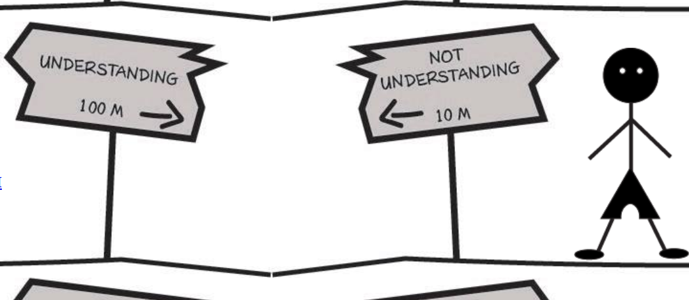
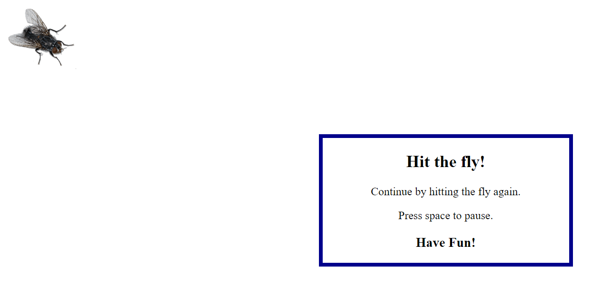
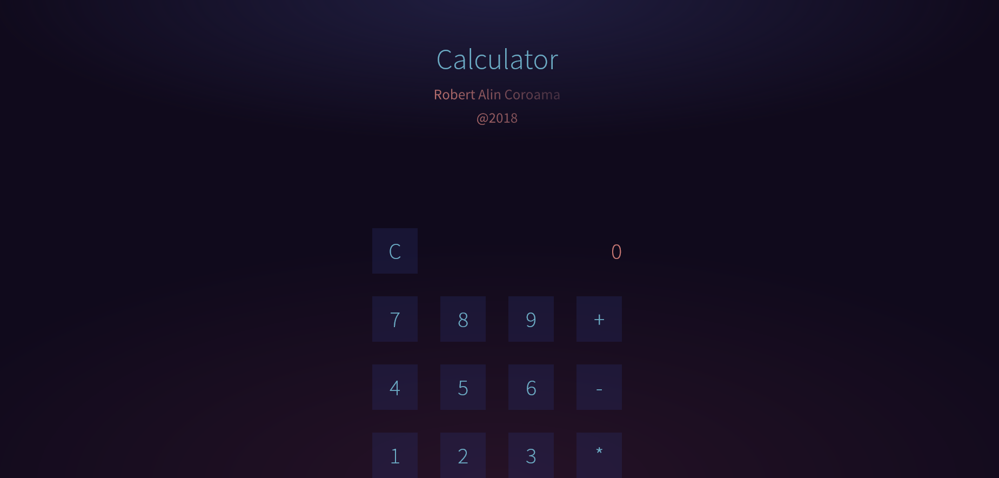
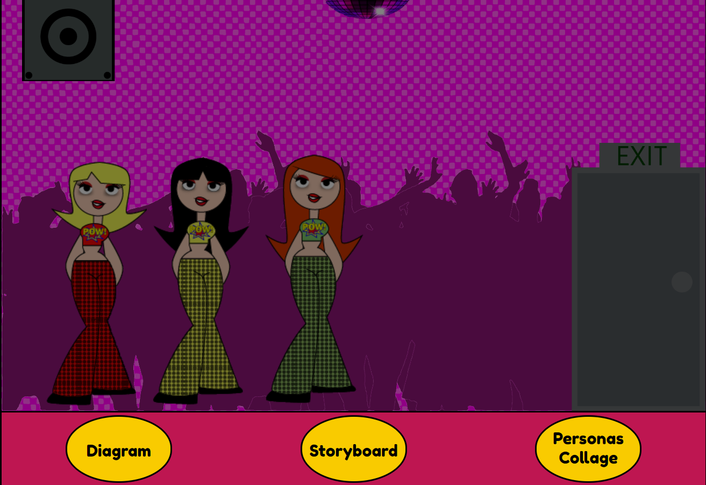
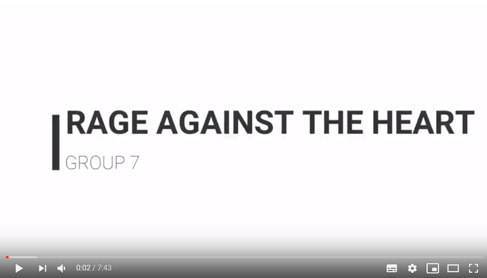

Basic Animation
This theme was based on coding in javascript.
For me,this theme was the biggest challenge.
I have never used javascript before and it was pretty hard for me to handle it.
03.01.02. Link to simple animation

03.03.02 Interactive Animation
03.03.03 Project Pool day 1
03.03.04 Project Pool day 2
03.04.05 Link to final interactive production
03.04.06 Link to screen cast documentation
